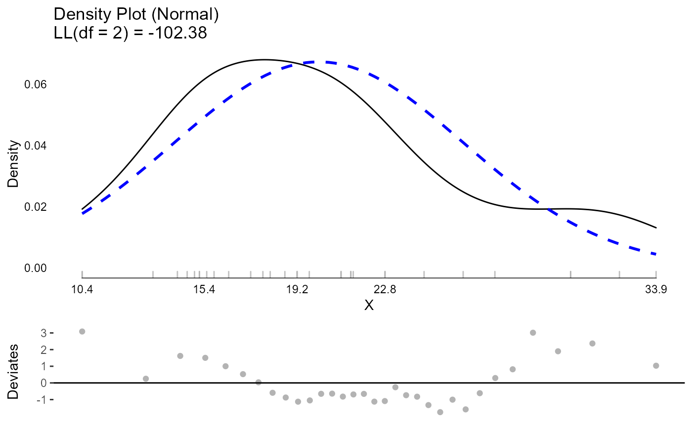
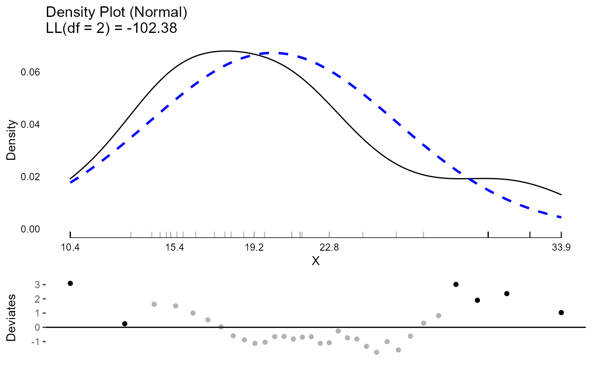
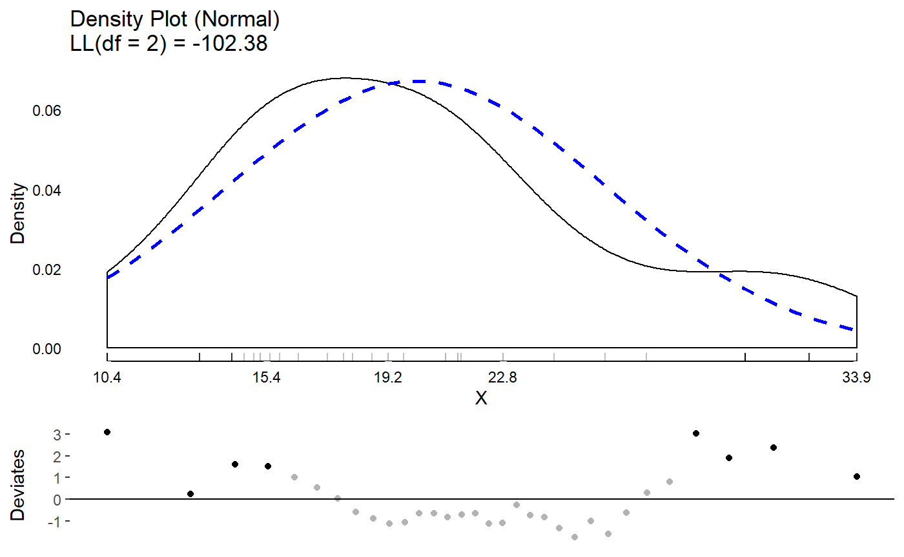
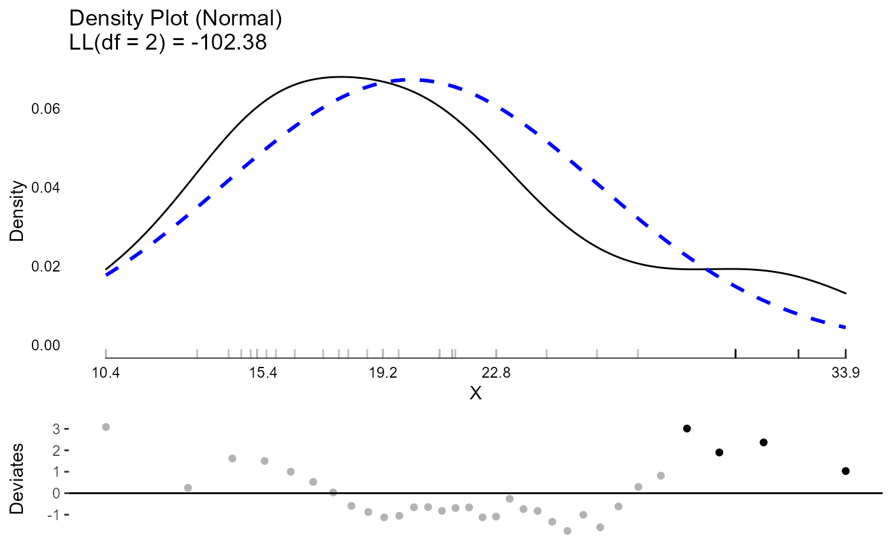
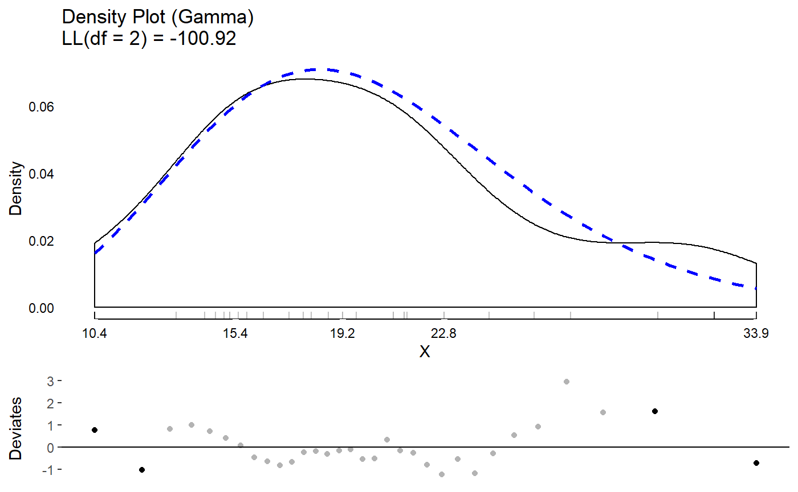
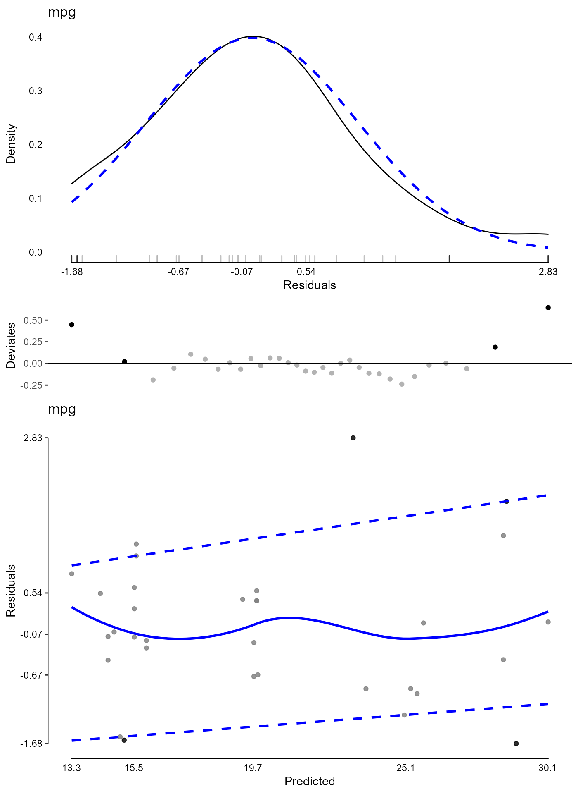
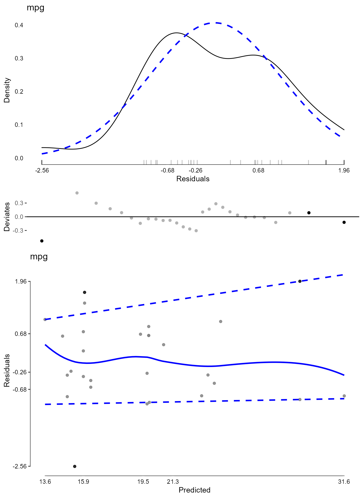

R/vignettes/diagnostics-vignette.Rmd
diagnostics-vignette.RmdTo start, load the package.
library(JWileymisc)The testDistribution() function can be used to evaluate whether a variable comes from a specific, known parametric distribution. By default, no outliers or “extreme values” are shown. These can be used directly through the data output or plotted. The plot includes both the empirical density, the density of the assumed parametric distribution, a rug plot showing actual values, if not too many data points, and a Quantile-Quantile plot (QQ Plot). The QQ Plot is rotated to save space, by removing the diagonal and rotating to be horizontal, which we call a QQ Deviates plot.
One other unique feature of the density plot is the x axis. It follows Tufte’s principles about presenting data. To make the x axis more informative, it is a “range frame”, meaning it is only plotted over the range of the actual data. Secondly, the breaks are a five number summary of the data. These five numbers are:
Most plots use breaks that are evenly spaced. These do not convey information about the data. Using a five number summary the breaks themselves are effectively like a boxplot with specific values provided so you can immediately read what values the min and max are, the median, etc.
test <- testDistribution(mtcars$mpg, "normal")
head(test$Data)
#> X Y OriginalOrder isEV YDeviates
#> 1: 7.313777 10.4 15 No 3.0862233
#> 2: 10.148901 10.4 16 No 0.2510990
#> 3: 11.680210 13.3 24 No 1.6197895
#> 4: 12.795066 14.3 7 No 1.5049335
#> 5: 13.698771 14.7 17 No 1.0012292
#> 6: 14.474288 15.0 31 No 0.5257124
table(test$Data$isEV)
#>
#> No Yes
#> 32 0
plot(test)
It is possible to have extreme values automatically identified either based on a theoretical distribution or empirically identified (e.g., the top or bottom XX percent are classified as extreme). We say that .10 (10%) of data points are “extreme” just to illustrate. Extreme values are shown in black with non extreme values shown in light grey, both in the rug plot and in the QQ plot. Although 10% is higher than typically would be chosen, given the small dataset, it is necessary to have extreme values at both ends of the distribution for illustration.
test <- testDistribution(mtcars$mpg, "normal",
extremevalues = "theoretical",
ev.perc = .10)
## view the data with extreme values
head(test$Data)
#> X Y OriginalOrder isEV YDeviates
#> 1: 7.313777 10.4 15 Yes 3.0862233
#> 2: 10.148901 10.4 16 Yes 0.2510990
#> 3: 11.680210 13.3 24 No 1.6197895
#> 4: 12.795066 14.3 7 No 1.5049335
#> 5: 13.698771 14.7 17 No 1.0012292
#> 6: 14.474288 15.0 31 No 0.5257124
## count how many extreme values there are
table(test$Data$isEV)
#>
#> No Yes
#> 26 6
## plot the distribution
plot(test)
## show which values are extreme
test$Data[isEV == "Yes"]
#> X Y OriginalOrder isEV YDeviates
#> 1: 7.313777 10.4 15 Yes 3.086223
#> 2: 10.148901 10.4 16 Yes 0.251099
#> 3: 27.386184 30.4 19 Yes 3.013816
#> 4: 28.501040 30.4 28 Yes 1.898960
#> 5: 30.032349 32.4 18 Yes 2.367651
#> 6: 32.867473 33.9 20 Yes 1.032527
## view extreme values on mpg in the original dataset
## by use the original order, the original rows to select
## the correct rows from the original dataset
mtcars[test$Data[isEV == "Yes", OriginalOrder], ]
#> mpg cyl disp hp drat wt qsec vs am gear carb
#> Cadillac Fleetwood 10.4 8 472.0 205 2.93 5.250 17.98 0 0 3 4
#> Lincoln Continental 10.4 8 460.0 215 3.00 5.424 17.82 0 0 3 4
#> Honda Civic 30.4 4 75.7 52 4.93 1.615 18.52 1 1 4 2
#> Lotus Europa 30.4 4 95.1 113 3.77 1.513 16.90 1 1 5 2
#> Fiat 128 32.4 4 78.7 66 4.08 2.200 19.47 1 1 4 1
#> Toyota Corolla 33.9 4 71.1 65 4.22 1.835 19.90 1 1 4 1Extreme values taken off the empirical percentiles can be chosen as well.
test <- testDistribution(mtcars$mpg, "normal",
extremevalues = "empirical",
ev.perc = .10)
head(test$Data)
#> X Y OriginalOrder isEV YDeviates
#> 1: 7.313777 10.4 15 Yes 3.0862233
#> 2: 10.148901 10.4 16 Yes 0.2510990
#> 3: 11.680210 13.3 24 Yes 1.6197895
#> 4: 12.795066 14.3 7 Yes 1.5049335
#> 5: 13.698771 14.7 17 No 1.0012292
#> 6: 14.474288 15.0 31 No 0.5257124
table(test$Data$isEV)
#>
#> No Yes
#> 24 8
plot(test)
Many distributions beyond normal are possible. These can be compared visually or based on log likelihoods. Here we compare results between a normal and gamma distribution. The log likelihood values show that the mpg variable is better fit by the gamma distribution than the normal, although they are quite close.
testN <- testDistribution(mtcars$mpg, "normal",
extremevalues = "theoretical",
ev.perc = .05)
testG <- testDistribution(mtcars$mpg, "gamma",
extremevalues = "theoretical",
ev.perc = .05)
## compare the log likelihood assuming a normal or gamma distribution
testN$Distribution$LL
#> 'log Lik.' -102.3778 (df=2)
testG$Distribution$LL
#> 'log Lik.' -100.9208 (df=2)
plot(testN)
plot(testG)
JWileymisc has features to support standard parametric model diagnostics. The generic function modelDiagnostics() has a method implemented for linear models.
In the code that follows, we use the modelDiagnostics() function to calculate some diagnostics which are plotted using the matching plot() method. The result is a plot of the standardized residuals against the expected (normal) distribution, the same QQ deviates plot we saw with testDistribution(). Together, these provide information about whether the model assumption of normality is likely met, or not. In addition, block dots and the black rug lines indicate relatively extreme residual values. The label in the top left is the outcome variable name.
Another plot is a scatter plot of predicted values (x axis) against the standardized residuals (y axis). Again a five number summary is used for the x and y axis. To assess whether there are any systematic trends in the residuals, a loess line is added as a solid blue line. To assess heterogeneity/heteroscedasticity of residuals, quantile regression lines are added as dashed blue lines. These lines are for the 10th and 90th percentile of the distribution. Depending on the model and data, these quantile regression lines may use smoothing splines to allow non-linear patterns. For the assumption that residual variance is homogenous, you would expect the two lines to be approximately parallel and flat, with equal distance between them, across the range of predicted values.
Note it is uncommon to decide that 5 percent of values are extreme. This high value was chosen to illustrate only. More common values in practice are ev.perc = .001, ev.perc = .005 or ev.perc = .01, which capture 0.1%, 0.5%, and 1% of values, respectively. However, in this small dataset, those would not give many “extreme values” for illustration, so a higher value was used.
m <- lm(mpg ~ hp * factor(cyl), data = mtcars)
md <- modelDiagnostics(m, ev.perc = .05)
#> Warning in .local(x, ...): singularity problem
#> Warning in rq.fit.sfn(x, y, tau = tau, rhs = rhs, control = control, ...): tiny diagonals replaced with Inf when calling blkfct
#> Warning in .local(x, ...): singularity problem
#> Warning in rq.fit.sfn(x, y, tau = tau, rhs = rhs, control = control, ...): tiny diagonals replaced with Inf when calling blkfct
plot(md, ncol = 1)
Finally, given that there are a few extreme values, we may want to identify and exclude them. We can view the extreme values. Here we extract these by effect type and with the outcome score associated with each. The index shows the index, from the residuals where the extreme values occurred. Note that this may not match up to the original data if there are missing values. In those cases, the easiest approach is to remove missing values on model variables first, then fit the model and then calculate diagnostics.
## show extreme values
md$extremeValues
#> mpg Index EffectType
#> 1: 24.4 8 Residuals
#> 2: 10.4 15 Residuals
#> 3: 33.9 20 Residuals
#> 4: 30.4 28 Residuals
## show extreme values in overall dataset
mtcars[md$extremeValues$Index, 1:4]
#> mpg cyl disp hp
#> Merc 240D 24.4 4 146.7 62
#> Cadillac Fleetwood 10.4 8 472.0 205
#> Toyota Corolla 33.9 4 71.1 65
#> Lotus Europa 30.4 4 95.1 113Using the extreme values index, we can exclude these and re-fit the model to see if it changes. We can show a summary of coefficients from each model and how much they change.
## exclude extreme values
m2 <- lm(mpg ~ hp * factor(cyl), data = mtcars[-md$extremeValues$Index, ])
## show a summary of coefficients from both models
## and the percent change
round(data.frame(
M1 = coef(m),
M2 = coef(m2),
PercentChange = coef(m2) / coef(m) * 100 - 100), 2)| M1 | M2 | PercentChange | |
|---|---|---|---|
| (Intercept) | 35.98 | 41.53 | 15.42 |
| hp | -0.11 | -0.19 | 69.18 |
| factor(cyl)6 | -15.31 | -20.86 | 36.23 |
| factor(cyl)8 | -17.9 | -22.95 | 28.19 |
| hp:factor(cyl)6 | 0.11 | 0.18 | 74.19 |
| hp:factor(cyl)8 | 0.1 | 0.18 | 78.53 |
Once some values are removed, new values may be extreme. Although additional passes are not that common, they can be done. In the following code, we conduct new diagnostics on the model that had extreme values from the first model removed.
## diagnostics after removing outliers from first model
md2 <- modelDiagnostics(m2, ev.perc = .05)
#> Warning in .local(x, ...): singularity problem
#> Warning in rq.fit.sfn(x, y, tau = tau, rhs = rhs, control = control, ...): tiny diagonals replaced with Inf when calling blkfct
#> Warning in .local(x, ...): singularity problem
#> Warning in rq.fit.sfn(x, y, tau = tau, rhs = rhs, control = control, ...): tiny diagonals replaced with Inf when calling blkfct
plot(md2, ask = FALSE, ncol = 1)